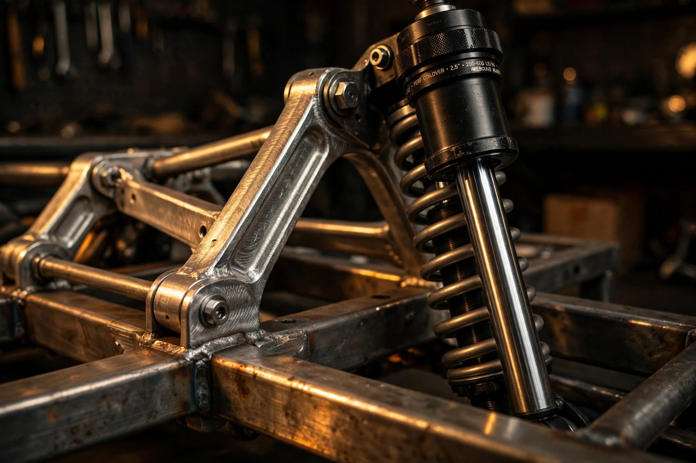

Cars / Chassis Engineering
The Frame Was Always the Compromise
Chip Foose unveiled a rolling chassis for 1963-1982 Corvettes at SEMA on November 3. C7-inspired geometry, billet 7075 control arms, and Camburg-built coilovers, all bolted to the factory body mounts. It is the most interesting thing at SEMA that is not a car.

SEMA rewards spectacle. Six-wheeled trucks, solar three-wheelers, a 1957 Corvette with shark-fin headrests. Chip Foose brought something quieter to the MagnaFlow exhibit on Tuesday, November 3: a bare rolling chassis, no body, no engine, two of them sitting on the show floor in orange and black. One looked like a show car. One looked like a hot rod. Both were the same answer to a question that has haunted C2 and C3 Corvette owners for decades, which is what to do when the frame underneath a beautiful fiberglass body is rusted, flexing, or both.
Foose Performance, the new company formed by Foose in partnership with MagnaFlow Group, is selling a complete replacement chassis for C2 Corvettes (1963-1967) and C3 Corvettes (1968-1982), in coupe and convertible form. It bolts directly to the original factory body mounting locations. It keeps the factory bumper, radiator core support, and fuel tank mounting points. And it replaces everything underneath with modern hardware: suspension geometry inspired by the C7 Corvette, billet 7075 aluminum control arms, coilovers built by Camburg Engineering, Wilwood brakes, and a Flaming River rack-and-pinion steering rack. Availability starts in the first quarter of 2027, in raw metal or powder-coated.
Restomod chassis are not new. Roadster Shop and Art Morrison have sold C2 and C3 replacement frames for years, and plenty of builders have cut and welded their own. What makes this one worth a closer look is the combination of who is building it, how it is built, and the constraint Foose imposed on himself. He refused to cut the car. Every mounting point the factory gave the body in 1963 is still there, in the same place, which turns a straightforward engineering job into a much harder one, and a much more interesting one.
Why a sixty-year-old frame is the problem
Start with what the original frames actually are. C2 and C3 Corvettes ride on a steel ladder frame with a separate fiberglass body bolted on top, a layout Chevrolet inherited from the 1950s and refined rather than replaced. By modern standards the frame is flexible, and flexibility in a frame is not a feature. A chassis that twists under load acts as an undamped spring, one with no shock absorber attached, soaking up suspension movement that the dampers were supposed to control and returning it at whatever frequency the steel feels like. Stiffen the frame and the suspension finally gets to do its own job.
Rust makes the same problem worse in a way no alignment shop can fix. Six decades of road salt, moisture trapped between steel and fiberglass, and frames that were never galvanized have left plenty of C2 and C3 frames structurally compromised, sometimes invisibly so until a body comes off. Hemmings framed the Foose chassis as a lifeline for exactly these cars, and that framing is honest. A replacement frame does not just improve handling. For a car whose original frame is gone, it is the difference between a restoration and a parts car.
One detail worth getting right, because Corvette forums corrected it within hours of the announcement: the birdcage is not part of the frame. That steel structure is bonded into the fiberglass body itself, and a new frame does not fix a rusted birdcage. Foose's chassis replaces the ladder frame and everything bolted to it. It does not pretend to solve the body's own corrosion, which is a separate, expensive job. Credit the honesty of the distinction, and keep it in mind when judging what this product actually promises.
C7 geometry, transplanted
At the heart of the chassis are suspension components Foose designed himself, with geometry inspired by the C7 Corvette, the 2014-2019 generation. What that phrase means in practice is a short/long-arm double-wishbone layout front and rear, with pickup points and camber curves derived from a car that was, by any honest measure, the best-handling front-engine Corvette Chevrolet had built to that point. Transplanting that geometry onto a ladder frame for a 1963 body is not a matter of copying coordinates. Pickup points have to be engineered into a new frame that also has to clear a fiberglass body designed around a completely different suspension, which is where the real work lives.
Foose's own description of the goal is worth quoting because it states a design philosophy rather than a spec: "My goal was to create a chassis that performs as beautifully as it looks. It could not look like a collection of individual components bolted together. Every piece is sculpted into the next. The lines flow from one component to another, so the entire chassis looks like it was designed as one complete piece." Four-time Ridler Award winner talking, and the Ridler is a show-car award, so skepticism is fair. But the parts list underneath the rhetoric is not decorative, and the parts list is where this article will spend most of its time.
One honest gap first. Foose Performance has published no torsional rigidity figure, no frame weight, and no camber curves for the new chassis. Without those numbers, "C7-inspired" is a direction, not a measurement. Any review that treats the geometry claim as proven is guessing. What can be judged today is the hardware bolted to the geometry, and that hardware is unusually well specified for a SEMA debut.
7075 where it counts, 6061 where it fits
Upper and lower control arms are precision-machined from billet 7075 aluminum. That alloy choice is the first genuinely engineering decision on the spec sheet, and it deserves a moment. 7075 is the zinc-alloyed aircraft aluminum, with a yield strength around 73,000 psi in the T6 temper, roughly double the 40,000 psi of the more common 6061. It is also harder to machine, more expensive, and effectively unweldable, which is why it shows up in machined parts and almost never in fabricated ones. Choosing billet 7075 for a control arm says the designer wanted maximum strength per unit of mass in a part that sees bending and fatigue loads every time the car hits a bump, and accepted the manufacturing cost of carving it from solid stock.
Compare that with the coilover pistons, which are machined from 6061 billet. A damper piston does not carry the same bending loads a control arm does. It needs dimensional stability, good machinability, and a surface that takes a hard anodize well. 6061 delivers all three at a fraction of the cost and machining time. Splitting the alloys this way, 7075 for the structure, 6061 for the damper internals, is the kind of quiet material judgment that separates a spec sheet written by engineers from one written by marketers. Both alloys are aluminum. They are not interchangeable, and Foose's team clearly knows it.
Custom front spindles tie the arms to the brakes, and splined sway bars handle roll control. Splined bars matter because they let the builder tune roll stiffness by swapping bar arms rather than the whole bar, a small detail that pays off every time a finished car needs its balance adjusted after its first real drive.
The damper is the argument
If one component justifies taking this chassis seriously, it is the coilover. Built in partnership with MagnaFlow Group at Camburg Engineering's shock absorber facility in Sandy, Utah, the Foose Performance coilovers carry a 2.125-inch hard-anodized aluminum body, a 1.812-inch 6061 billet-aluminum piston with Type III hard anodizing, and a 5/8-inch hard chrome, induction-hardened, micro-polished shaft. Rebound damping is adjustable from an accessible knob, ride height is adjustable, and the springs are progressive rate.
Body diameter is the number to dwell on. A 2.125-inch shock body holds substantially more oil than the 1.5-inch or 1.75-inch bodies common in the aftermarket, and more oil means more thermal capacity, which means the damper's viscosity stays closer to its design point on a long run over rough pavement. Damping fade is a heat problem before it is a valving problem, and a fat shock body is the honest answer to it. Type III hard anodizing, the thickest and hardest anodize class at roughly two thousandths of an inch, protects that big body from the stone chips and grit that a low-slung Corvette throws at its own suspension.
Progressive-rate springs deserve a note too, because they are a compromise with a purpose. A spring that stiffens as it compresses gives a civilized ride over small bumps and real support when the suspension loads up in a corner, which is exactly what a restomod needs: a car that can drive to dinner and still hold its line on a back road. Adjustable rebound from a knob you can actually reach means the owner can tune that compromise without putting the car on a lift, which is how the adjustment actually gets used instead of staying at the factory setting forever.
Brakes and steering, brought current
Wilwood supplies the braking: 14-inch drilled and slotted rotors front and rear, with six-piston calipers up front and four-piston calipers at the rear, mounted on Foose Performance backing plates and caliper mounts. Fourteen inches of rotor on a car that left the factory with 11.75-inch discs is not a subtle upgrade. It is also the correct one for a chassis that will, in most builds, carry a modern LS or LT V8 making two or three times the power of the original small-block. Braking capacity has to scale with the powertrain, and the original C2/C3 brakes were marginal even in their own era.
One discrepancy to flag, because rigor means recording it rather than smoothing it over: one secondary roundup lists 13-inch rotors, while Hot Rod's spec sheet and CorvetteForum both list 14-inch. Two primary-ish sources against one secondary roundup is enough to print 14-inch, but the disagreement is a reminder that SEMA-week spec sheets are living documents, and the final production number is the one that matters.
Steering comes from Flaming River, a quick-ratio power rack-and-pinion. Rack-and-pinion replaces the original recirculating-ball steering box, which is one of the single largest handling improvements available to any C2 or C3, regardless of chassis. Recirculating-ball boxes have play built into their design. A rack does not. Pairing it with a rigid frame and modern geometry means steering input finally reaches the tires without being filtered through sixty years of slop.
MagnaFlow supplies a 3-inch exhaust system designed specifically for the chassis. Three inches sounds large for a classic Corvette, and it is, but the chassis is explicitly built to accept modern LS and LT crate engines alongside traditional small-blocks and big-blocks, and a 3-inch system is sized for the modern end of that range. Manual and automatic transmissions are accommodated, and most BluePrint Engines combinations fit between the rails.
The bolt-on constraint
Return to the constraint, because it is the most revealing engineering decision in the whole product. A clean-sheet frame with no regard for factory mounting points would be easier to design, stronger per pound, and cheaper to build. Foose chose the harder path: bolt to the original body mounts, keep the bumper, radiator core support, and fuel tank where the factory put them, and make a restored fiberglass body mate to the new skeleton without cutting anything.
That constraint does three things at once. It keeps the car a Corvette in the eyes of anyone who cares about originality, since the body never gets modified. It makes the install a weekend-scale job for a competent shop rather than a fabrication project. And it forces the frame designer to solve packaging problems, suspension pickup points, exhaust routing, steering rack placement, inside a fixed envelope rather than an open one. Constraints like that are familiar to watchmakers, who fit modern movements into vintage cases without touching the case, and the discipline it imposes shows in the result.
What the constraint does not do is make the car modern. A 1963 body on a 2026 frame is still a 1963 body, with 1963 aerodynamics, 1963 seating position, and 1963 crash structure, which is to say essentially none. Nobody should read this chassis as a safety upgrade. It is a handling and preservation upgrade, and it is honest about that by omission: Foose Performance makes no crash or safety claims, and neither should anyone writing about it.
A crowded frame market, entered late
Foose is not first to this market, and that matters for judging the product. Established builders have sold C2 and C3 replacement frames for years, with proven track records, known weights, published rigidity numbers, and cars already on the road. A buyer choosing between a proven frame and a new one from a designer with no chassis-manufacturing history is taking a risk, and the risk is not trivial: the frame is the foundation everything else bolts to.
What Foose is betting on is twofold. First, the aesthetic argument, that a chassis designed as one sculpted piece rather than an assembly of catalog parts is worth something to builders who show their cars. Second, the manufacturing argument, that MagnaFlow Group's scale and Camburg's shock facility give Foose Performance a production base that a small frame shop cannot match. Both bets are plausible. Neither is proven yet, and the proof will be the first hundred cars built on these frames, not the two show chassis at SEMA. Before ordering, ask for the frame weight and a torsional rigidity figure, then compare both against the established frames before committing.
Jeff Hermann, MagnaFlow Group's vice president of brand and strategy, called it "just the beginning of a new era of performance" and said additional chassis systems for other classic vehicles are already under development. That is the language of a platform play, not a one-off product, and it reframes the C2/C3 chassis as the first entry in a catalog rather than a standalone tribute. Whether the catalog materializes depends on whether this first frame sells, and whether the cars built on it drive as well as they look underneath.
Foose dreamed of starting a chassis company while designing and building components at Boyd Coddington's shop, early in his career. He told CorvetteBlogger the opportunity finally arrived with MagnaFlow as a partner. Forty years from a young builder's ambition to a SEMA unveiling is a long arc, and the product at the end of it is, on paper, a serious piece of engineering: a rigid frame, honest materials, fat dampers, real brakes, and a constraint that forced the designers to be clever rather than merely strong. Paper is not pavement. Early 2027 will tell the rest.
Foose Performance C2/C3 rolling chassis: key figures
| Application | C2 Corvette (1963-1967) and C3 Corvette (1968-1982), coupe and convertible |
|---|---|
| Unveiled | November 3, 2026, SEMA Show, MagnaFlow exhibit #23143, Las Vegas |
| Availability | Early 2027 (first quarter); raw metal or powder-coated |
| Suspension geometry | C7 Corvette-inspired, front and rear |
| Control arms | Billet 7075 aluminum, upper and lower, precision-machined |
| Coilovers | Foose Performance, built at Camburg Engineering, Sandy, Utah; rebound and height adjustable, progressive-rate springs |
| Shock body / piston / shaft | 2.125-in hard-anodized aluminum body; 1.812-in 6061 billet piston, Type III hard anodized; 5/8-in hard chrome, induction-hardened, micro-polished shaft |
| Brakes | Wilwood 14-in drilled and slotted rotors, 6-piston front / 4-piston rear calipers |
| Steering | Flaming River quick-ratio power rack-and-pinion |
| Exhaust | MagnaFlow 3-in system designed for the chassis |
| Mounting | Bolts to original factory body mounts; retains OEM bumper, radiator core support, and fuel tank mounts |
| Powertrains | Small-block, big-block, LS, LT; manual and automatic; most BluePrint Engines combinations |
| Not published | Frame weight, torsional rigidity, price, camber curves |
Sources: Hot Rod, "Chip Foose Launches C2/C3 Corvette Rolling Chassis," Nov 3, 2026; CorvetteBlogger, "Chip Foose Launches a C2/C3 Corvette Rolling Chassis at SEMA," Nov 4, 2026; CorvetteForum, "Foose Performance Unveils C7-Inspired Rolling Chassis for C2 & C3 Corvettes," Nov 5, 2026; Hemmings, "Chip Foose's New Bolt-On Solution: The Ultimate Way to Save and Restomod Your C2 or C3 Corvette," Oct 2026; The AutoBuilder, "Foose Design C2/C3 Corvette Chassis Debuts at SEMA 2026," Nov 4, 2026; TimePiece PR, Foose Performance SEMA announcement, Oct 28, 2026; Autoweek via CorvetteForum, Oct 29, 2026.